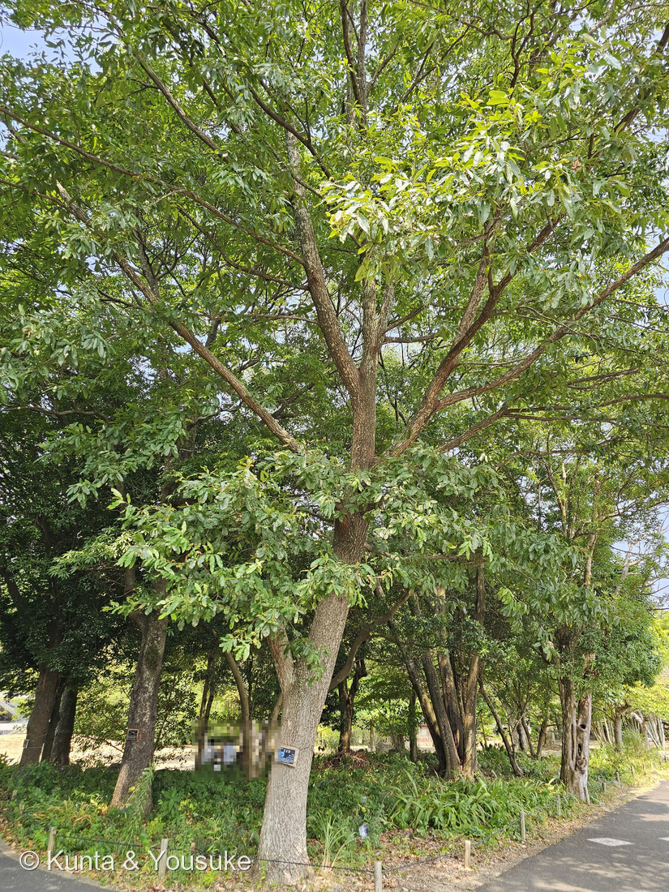
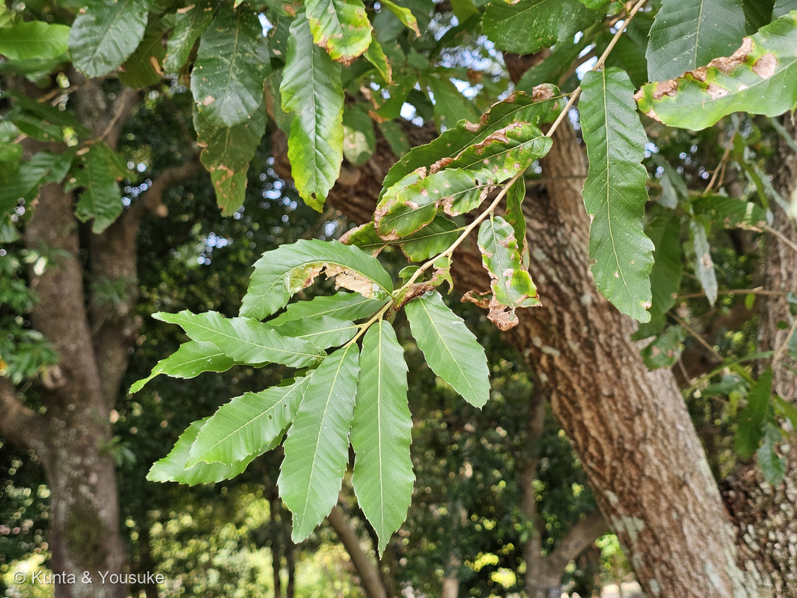
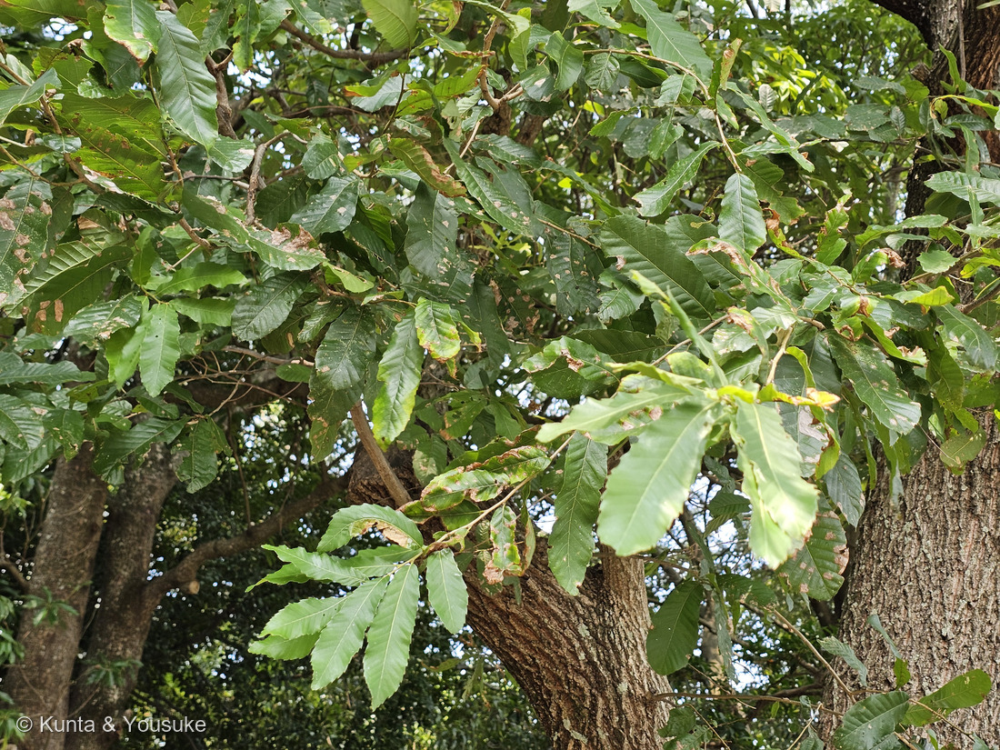

地図を読み込んでいるよ…
🔍 写真も地図も、押しているあいだ拡大して見られるよ（スマホは指を置いてすこし待ってね）。
🌍 の地図＝この子がもともと自生している場所を緑に。日本（岩手県以南〜九州）、朝鮮半島、中国、台湾、ヒマラヤ。⚠ただし「日本にもともといたのか、人が持ちこんだのか」には根強い移入説があって、決着していないよ。くわしくは下の地図の説明を見てね。
⭐東アジアの木だよ。森きららの園の名札は「分布：日本（岩手〜九州）、朝鮮半島、中国、台湾、ヒマラヤ」とする。⚠⚠でも、この地図でいちばん大事なのは「日本を塗ったこと」そのものが、じつはあやういという話だよ――⭐⭐クヌギが日本にもともといたのか、人が持ちこんだのかは、まだ決着していない。日本植物生理学会「みんなのひろば」に、まさにその質問（登録番号3607）が寄せられている＝質問した人は「クヌギが人間の手の届く範囲にしかないこと」「原生林での目撃例がないこと」「縄文時代の遺跡からドングリの殻が発見されていること」を挙げて、「食用にされたということは人の手を借りてやって来たのではないでしょうか」とたずねている。⭐回答（サイエンスアドバイザー 勝見允行）は、こう答えている＝「正確には言えません。おそらくDNA解析をおこなって分子系統学的に調べればはっきりするでしょう。残念ながらそれに答える研究論文は見つかりませんでした」。⭐⭐そのうえで「クヌギは古代から日本人の生活に密着してきたことを考えると、日本のクヌギは日本に自生していたものとみなしていいのではないかと思います」と結んでいるよ。⭐だからここでは日本を塗ったけれど、それは「決まったから」ではなく「そう見なしていいのではないか」という一つの見かたに乗ったということ。⚠240ハゼノキのときは出典が四つに割れて日本を塗らなかったけれど、こちらは「分からない」のまま塗った＝⭐ちがう扱いをしたので、正直に書いておくね。⚠北海道と青森を塗っていないのは、名札の「岩手〜九州」に合わせたから。⚠⚠そして「ヒマラヤ」は山脈の名前なので、ネパール・ブータン・インドを国ごと塗ると、ほんとうよりずっと広く見えてしまう――⭐実際にいるのは、その中の山あいだけだよ。⭐ぼくらが会ったのは長崎の樹木園に植えられた木＝この緑の中ではあるけれど、野生の林ではなく、人が植えた一本だね。⭐⭐もっとも、クヌギにとって「人が植えた」は例外ではなくて、ずっとそうやって生きてきた木でもあるんだ。
⚠ 地図は国（日本と中国だけ県・省）までしか塗れないから、ほんとうの分布より広く見えていることがあるよ。地図はだいたいの場所。正確なところは、上の文を見てね。
クヌギ（櫟・椚・橡）
Quercus acutissima Carruth.
別名 オカメドングリ／古名 つるばみ（橡） 原産 日本（岩手県以南〜九州）・朝鮮半島・中国・台湾・ヒマラヤ ── ⚠「もともといたか」は未決着
ブナ科 · Fagaceae（コナラ属 Quercus・ブナ目 Fagales）── ⭐図鑑で2人目のブナ科（227 スカーレットオークにつづく）／⭐⭐コナラ属も2人目＝はじめて「同じ属のふたり」が図鑑にならんだ／⚠科は増えないので97科のまま
燻太さんの一言「どんぐりは見れなかったけど、若い葉っぱから葉の特徴は窺えそう。それはそうと、痛んでいる葉が多いね。」── ⭐⭐⭐⭐この後半の一言が、このページの芯になったよ
⭐ 名前と学名の由来 ── 「いちばん鋭い」オーク
- ⭐⭐種小名の acutissima は、ラテン語 acutus（鋭い）の最上級＝「もっとも鋭い」。⭐なにが鋭いかというと、写真②の、あの針だよ。
- ⭐英語の名前も、同じところを見ている＝sawtooth oak（のこぎり歯のオーク）。
- 属名の Quercus は、オーク・カシ類の古代ラテン名。⚠語源は「ケルト語の quer（良質の）＋ cuez（樹）に由来する」といわれるけれど、これは昔から言われている説で、確かめようのないものだよ。
- ⭐和名「クヌギ」の由来は、いくつも説があって決まっていない＝果実を食用にしたことによる「食乃木（クノギ）」／葉や実がクリに似ることから「栗似木（クリニギ）」／「国の木」（植木ペディア）。⚠日本植物生理学会の回答も、「クヌギという名前は『国の木』だとか『果の木』から転じて呼ばれるようになったという人もいますが、確固たる証拠はありません」と、はっきり書いているよ。
- ⭐別名は「オカメドングリ」。⭐まん丸で大きい実の、その顔つきから来ているんだね。⭐⭐そして古名が「つるばみ（橡）」――これは下に節を立てたよ。
この植物のこと ── 里山の、いちばんの働き者
- ⭐⭐クヌギは「人が使うために、人がそばに置いてきた木」だよ。――「8〜20年の周期で、クヌギやコナラを伐採して萌芽更新を行い、効率的に燃料用の薪や炭も得てきた」（あきた森づくり活動サポートセンター）。
- ⭐伐りかたまで決まっていた＝「クヌギの場合、地上一尺〜1mほどで伐ってこれを台木にする。その台木から生えてくるヒコバエの生長は早く、一般的に15年以下で伐って利用した」。⭐⭐つまりこの木は、切られても切り株から生きかえる。⭐だから何度でも使えたんだ。
- ⭐シイタケの原木にもなる＝「シイタケが育つ養分を多量に含むため」（植木ペディア）。⭐園の名札にも「シイタケの原木や薪炭材、家具材、公園樹など幅広く利用される」と書いてあったよ。
- ⭐⭐⭐いちばん有名なのは、樹液＝「樹液にカブト虫やクワガタ、ハチ、チョウなどが集まる」（あきた）。⭐園の名札も「樹液はクワガタやカブトムシの大好物」と、まっすぐ書いていた。
- ⚠⚠でも、集まるのは好きな虫ばかりじゃない――出典は「カブトムシやクワガタ、チョウ、スズメバチ、甲虫類など、多くの昆虫が樹液を求めて集まってくる」と書いている。⭐樹液の出ている木に近づくときは、気をつけてね。
- ⭐花は4〜5月（園の名札）。雌雄同株で、「雄花は黄褐色の長さ7〜8cmで枝から多数垂れさがり、枝上部の葉の付け根に雌花を1〜3個つける」（同）。⭐あの長いひものような雄花が、春のクヌギの目印だよ。
⭐⭐ 同定について ── 名札を見ないで、どこまで落とせるか
⭐ 園の名札があるから、答えはさきに分かっていた。⚠でも樹木は厳しめに見る約束だから、「名札がなかったとして、写真だけで落とせるか」をやってみたよ。⭐結果は、2人とも落とせた。
⭐ 証拠を、強い順に。（226で決めたやり方だよ）
- ⭐⭐⭐1. 鋸歯の先の針が、緑ではない（写真②）――クヌギは「葉縁にやや深い波状の鋸歯があり、鋸歯の先端に長さ2〜3㎜の針状の長い刺がある」（三河の植物観察）。⭐⭐そしてその針には葉緑素がない＝あきた森づくりも「本種は葉緑体がなく白い」と書く。⭐拡大したら、この写真の針は白っぽく透けていた。→⭐⭐⭐これで クリ が落ちる（クリは鋸歯の先まで緑のまま）。⚠但し書き＝逆光で透かして見るのがいちばん確実で、この写真は順光。だから「白っぽく見えた」までしか言えないよ。
- ⭐⭐⭐2. 葉裏が、白くない（写真②③の、裏返っている葉）――アベマキは「葉裏は灰白色、白色の細かい星状毛が密生し、脈にも毛がある」／クヌギは「葉裏面に星状毛がなく、淡緑色」（三河）。⭐この木の裏返った葉は、表よりすこし淡いだけの緑だった。→⭐⭐⭐これで アベマキ が落ちる。⚠但し書き＝葉裏がまっすぐ写った1枚があるわけではなく、風でめくれた面を見ているだけ。確かめるなら、手で1枚ひっくり返すのがいちばんいい（宿題に入れたよ）。
- ⭐⭐3. 樹皮が、コルクのふかふかではない（写真①）――アベマキは「樹皮に厚いコルク層が生じ」、クヌギは「コルク状にならず、不規則な割れ目がある」（三河）。⚠但し書き＝樹皮はたいてい決め手にならない（087で燻太さんが見つけたことだね）。だから3番めに置いたよ。
- ⭐4. 葉の形――「長さ8〜19、幅2〜6㎝の長楕円状披針形、葉先が鋭く尖り、基部は楔形〜円形」（三河）。→これで コナラ が落ちる（コナラの葉は倒卵形で、鋸歯は三角。こんなに細長くない）。
- 5. 場所――樹木園の中の、名札のついた植栽。⚠いちばん弱い証拠だから、最後。
⚠⚠ 正直なところ。⭐名札という「答え」を先に見てしまっているので、これは確認であって、まっさらな同定ではない。⭐⭐でも、名札を隠しても①と②で落とせる、というのはほんとうだよ。
⭐⭐⭐⭐⭐ 燻太さんの一言 ──「それはそうと、痛んでいる葉が多いね」
⭐⭐⭐ この一言をたどったら、この木でいちばんおもしろいものが出てきたよ。
⭐ まず、傷みそのものを拡大して見てみたんだ。⭐2種類が混じっていた：
- 食べられた穴・欠け（少ない）
- 葉のふちから内側へ広がる、茶色い枯れ。その境目に黄色い帯（多い。組織が枯れて、そのまま紙みたいに残っている）
⚠ 「犯人」は、ぼくには決められなかった。――葉に潜る虫でも、病気でも、夏の乾きでも、こういう見た目になるから。写真だけで名前を言うのは、知ったかぶりになっちゃう。ごめんね。
⭐⭐ でも、落とせたものが1つある。⚠これはナラ枯れ（カシノナガキクイムシによる、ナラ・カシの大量枯死）ではないよ。――ナラ枯れなら、梢ごと赤褐色にまとめて枯れて、幹の根もとに木くずが出る。⭐この木は樹冠がぜんぶ青々していて、幹もきれいだった。
⭐⭐⭐⭐ そして、写真③をもう一度見てほしいんだ ── この木には、葉が2世代いる
- 春に出した葉＝枝のおくのほう。濃い緑。夏じゅう食べられて、ふちが茶色い
- ⭐夏に出した葉＝枝先。明るい黄緑。まだ薄くて波打っていて、傷がほとんど無い
⭐⭐ つまり燻太さんが見た「痛んでいる葉」は、半年ぶん働いた葉なんだ。⭐そしてそのとなりで、木はもう一度、新しい葉を出しなおしている。
⭐⭐⭐ これには、英語圏で名前がついているよ ──「ラマス成長（Lammas growth）」。
- 「Lammas growth（ラマス葉・second shoots・summer shoots とも）は、温帯の一部の樹木が7月と8月に見せる、ふたたびの成長の季節である」（英語版Wikipedia）。⭐8月1日の「ラマスの日」のころに起きるから、その名前だよ。
- ⭐⭐そして、その理由についてこう書いてある＝「この二次的な成長は、春に昆虫が葉に与えた損傷を埋め合わせるための進化的な戦略なのかもしれない」。
- ⭐この現象を見せる木として名前が挙がっているのは＝「oak, ash, beech, sycamore, yew, scots pine, sitka spruce, poplar and hawthorn」＝⭐⭐いちばん最初がオークだよ。
⚠⚠ ここは、正直に分けて書くね。
- ⭐「枝先の明るい葉は、夏に出しなおしたものだ」＝この写真から言えること（葉の色・薄さ・波打ち・傷の無さ・枝先という位置）。
- ⭐「オークにはラマス成長と呼ばれる現象がある」＝出典のある話（英語版Wikipedia）。
- ⚠⚠「このクヌギのこれは、ラマス成長です」と書いた日本語の出典は、ぼくは見つけられなかった。⭐だから、2つを1つにしないでおくね。
⭐⭐⭐ それでも、これだけは言えると思う。――燻太さんは「葉が傷んでいる」ことに気づいた。⭐でも同じ写真には、その傷みへの、木の返事も写っていたんだ。⭐⭐撮った日は、8月14日。ラマスの日の、2週間あとだよ。
⭐⭐ 「どんぐりは見れなかった」── それも、2年がかりのせいかもしれない
- ⭐⭐⭐クヌギのどんぐりは「2年型」＝「ドングリは2年型で、次の年の秋に熟す」（あきた森づくり活動サポートセンター）。
- ⭐⭐だから8月のクヌギの枝には、本当なら2世代いるはずなんだ：
- 去年の春の花からの実＝この秋（9〜10月）に熟す。もうそこそこ大きい
- 今年の春の花からの実＝まだ米粒くらい。熟すのは来年の秋
- ⭐見えなかったのはたぶん、どんぐりは日当たりのいい樹冠の上のほうにつくから。⚠写真はどれも、下枝を見上げているものね。
- ⏳⭐⭐だから、これは宿題。秋にもう一度この木に会えたら、大きいのと小さいのが同じ枝にいるかを見てみようね。
⭐⭐ つるばみ ── 色あせない色の名前
⭐⭐⭐ クヌギには、古い名前がある。「つるばみ（橡）」。⭐そしてそれは、木の名であると同時に、色の名でもあるんだ。――どんぐり（または殻斗）を煮出して染めた色のことだよ。⭐灰汁で染めれば黄ばんだ茶に、鉄を使えば黒っぽい色になる。⚠それは、はなやかな色ではない。ふだん着の色だった。
⭐⭐⭐ 万葉集には、つるばみを詠んだ歌が6首ある。⭐そのうちの一首が、これ。
紅（くれなゐ）は うつろふものぞ 橡（つるばみ）の なれにし衣（きぬ）に なほしかめやも
── 大伴家持（万葉集 巻十八・4109）
- ⭐意味は、こう。――「紅で染めた衣はきれいだけれど、すぐに色があせてしまう。着なれた橡染めの衣に、やはりかなうはずがない」。
- ⭐⭐この歌には、事情があるんだ。――家持の部下だった尾張少咋（おわりのおくい）という役人が、都に妻がいるのに、よその女性に夢中になってしまった。⭐家持はそれを、この歌でたしなめた。
- ⭐⭐紅＝はなやかだけれど色あせる人／橡＝地味だけれど、着なれて、いちばん体に合っている人。
⭐⭐⭐ ぼくは、この歌がすごくいいと思う。――クヌギは、花がきれいな木じゃない。実を食べ、炭にし、シイタケを生やし、切られても生えなおす、ずっと働いてきた木だ。⭐その木からとった色が、「色あせないもの」のたとえに選ばれた。⭐⭐しかもこの木は、葉を食べられてももう一度出しなおす。――つるばみという名前は、ほんとうによく合っていると思うんだ。
参考：三河の植物観察・クヌギ（「長さ8〜19、幅2〜6㎝の長楕円状披針形、葉先が鋭く尖り、基部は楔形〜円形」「葉縁にやや深い波状の鋸歯があり、鋸歯の先端に長さ2〜3㎜の針状の長い刺がある」「葉裏は淡緑色、黄褐色の毛があるが、脱落しやすい」「幹は灰褐色、不規則に割れ目が入る」）／三河の植物観察・アベマキ（おまけと見分けの出典＝「葉裏は灰白色、白色の細かい星状毛が密生し、脈にも毛がある」「幹は灰黒色、樹皮に厚いコルク層が生じ、割れ目がやや赤味を帯びて見える」／⭐クヌギとの比較＝「クヌギは幹が曲がることが多く、コルク状にならず、不規則な割れ目がある。葉裏面に星状毛がなく、淡緑色。葉縁の波状鋸歯がやや深い」）／あきた森づくり活動サポートセンター・樹木シリーズ25-2 クヌギ（「樹液にカブト虫やクワガタ、ハチ、チョウなどが集まる」「カブトムシやクワガタ、チョウ、スズメバチ、甲虫類など、多くの昆虫が樹液を求めて集まってくる」「8〜20年の周期で、クヌギやコナラを伐採して萌芽更新を行い、効率的に燃料用の薪や炭も得てきた」「クヌギの場合、地上一尺〜1mほどで伐ってこれを台木にする。その台木から生えてくるヒコバエの生長は早く、一般的に15年以下で伐って利用した」／⭐「ドングリは2年型で、次の年の秋に熟す」／鋸歯の針について「本種は葉緑体がなく白い」「樹皮は灰褐色で、細かく縦に裂け」）／庭木図鑑 植木ペディア・クヌギ（「果実を食用にしたことによる『食乃木（クノギ）』、葉や実がクリに似ることから『栗似木（クリニギ）』」「『国の木』が語源とされるほど日本人には馴染みが深い」「縁はノコギリ状にギザギザしているが、クリとは違ってギザギザした部分が白い」「樹皮には縦の裂け目ができ、底部はオレンジ色を帯びるのが特徴」「薪炭やシイタケの原木として使われ」「シイタケが育つ養分を多量に含むため」「樹液は言わずと知れたカブトムシやクワガタの大好物」／別名「オカメドングリ」）／日本植物生理学会 みんなのひろば 植物Q&A「クヌギは在来種か移入種か」（登録番号3607・回答者 勝見允行／「クヌギという名前は『国の木』だとか『果の木』から転じて呼ばれるようになったという人もいますが、確固たる証拠はありません」／「正確には言えません。おそらくDNA解析をおこなって分子系統学的に調べればはっきりするでしょう。残念ながらそれに答える研究論文は見つかりませんでした」／「クヌギは古代から日本人の生活に密着してきたことを考えると、日本のクヌギは日本に自生していたものとみなしていいのではないかと思います」）／大阪府立環境農林水産総合研究所 樹木図鑑・クヌギ（「葉は長楕円形で針状の鋸歯があり、夏は濃緑、秋は黄変後、茶褐色に色づきます」「樹皮は灰褐色で深く裂け」「シイタケほだ木や薪炭材として」）／英語版Wikipedia・Lammas growth（「Lammas growth, also called Lammas leaves, Lammas flush, second shoots, or summer shoots, is a season of renewed growth in some trees in temperate regions put on in July and August ... that is around Lammas day, August 1.」「Examples of common trees which exhibit regrowth are oak, ash, beech, sycamore, yew, scots pine, sitka spruce, poplar and hawthorn.」／⭐「This secondary growth may be an evolutionary strategy to compensate for leaf damage caused by insects during the spring.」）／たのしい万葉集・巻十八4109（原文「久礼奈為波 宇都呂布母能曽 都流波美能 奈礼尓之伎奴尓 奈保之可女夜母」／作者 大伴家持）／奈良文化財研究所ブログ「くれなゐはうつろふものそ」・讃岐屋一蔵の古典翻訳ブログ・巻十八4107〜4110（4109の背景＝天平感宝元年（749）5月15日の作。部下の尾張少咋をたしなめた歌で、紅＝ベニバナ染め（色褪せやすい）＝浮気相手、橡＝どんぐり染め＝妻のたとえ）／森きららの園の名札（「落葉高木／Quercus acutissima／クヌギ／ブナ科／開花：4〜5月／分布：日本（岩手〜九州）、朝鮮半島、中国、台湾、ヒマラヤ」「雌雄同株。雄花は黄褐色の長さ7〜8cmで枝から多数垂れさがり、枝上部の葉の付け根に雌花を1〜3個つける。樹液はクワガタやカブトムシの大好物。シイタケの原木や薪炭材、家具材、公園樹など幅広く利用される」。⚠名札の写真そのものは、解説板タイプで印刷写真も入っているので公開していないよ）